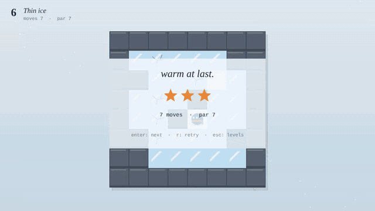
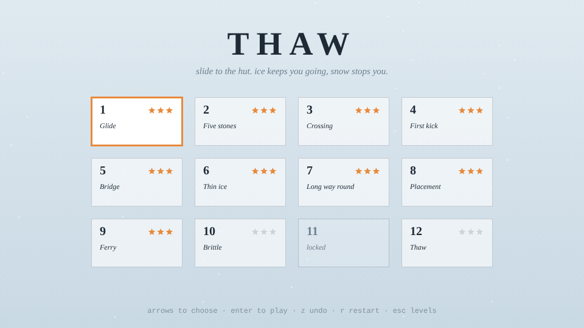
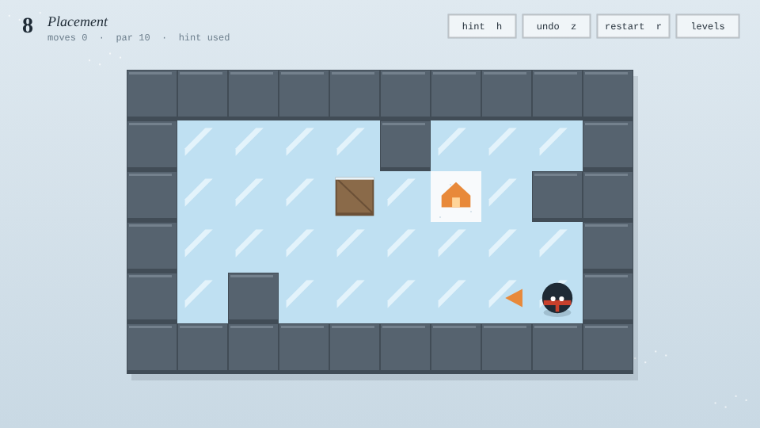

thaw
Twelve rooms, and a solver that proves every one.
An ice-sliding puzzle game. You slide until something stops you: snow, rock, or a crate you kicked into place. Slide a crate into water and it sinks into a snow tile you can stand on; cracked ice breaks behind whatever leaves it. Reach the hut in par for three stars. A breadth-first solver proves every room: the tests re-solve all twelve on every run and fail if a stated par is wrong or a level's crates aren't actually needed.
Play it in the browser on itch.io or on GitHub Pages, or run it locally and verify the task pack:
npm start · npm test · npm run tasks
Walkthrough



Task pack
Three tasks in the shape used to evaluate AI agents on game development. Each has a brief written as it would arrive, acceptance criteria (input sequence, expected visual outcome, verifiable game state), a reference solution with root-cause notes, and an automated check against the real rules. A verifier proves every check fails on the starting state and passes on the solution, with the whole unit suite green.
Undo doesn't fix the ice
Bug · player report
The undo snapshot became a shallow spread that shares the tile array with the live game, so broken ice and filled water survive an undo.
Next level starts with a move made
Bug · QA ticket
Presses queued during the winning slide aren't cleared when a level starts, so they play on the next level (or after a restart).
Hints
Feature · producer request
Run the solver from the current state and show the next move; report dead ends; cap a hinted run at two stars. Touches the solver, session, scoring, UI and input.
Verified proof
19 unit tests: all twelve levels solved at their stated par and replayed through the rules, crates required where present, every rule, undo, the input queue and stars. All three task checks fail on their starting state and pass on their solution with the suite green. A headless browser smoke test plays all twelve rooms through key presses at par and tries a swipe, with no console errors.
How it is built
Pure rules, a pure session (levels, undo, stars, input queue, with time passed in) and a separate screen. Level 1 was built by hand; the rest were found by a solver-driven search that keeps only rooms whose shortest solution is long enough and uses the mechanic being taught, then picked and ordered by hand.
Honest limits
Twelve rooms. Tested in Chromium; Firefox and Safari use only standard canvas and WebAudio APIs but haven't been verified. Built without an engine.